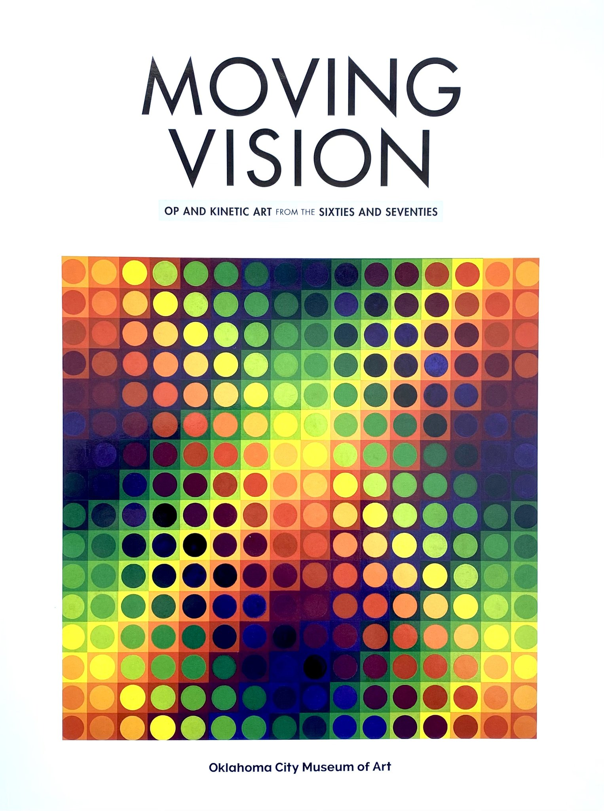
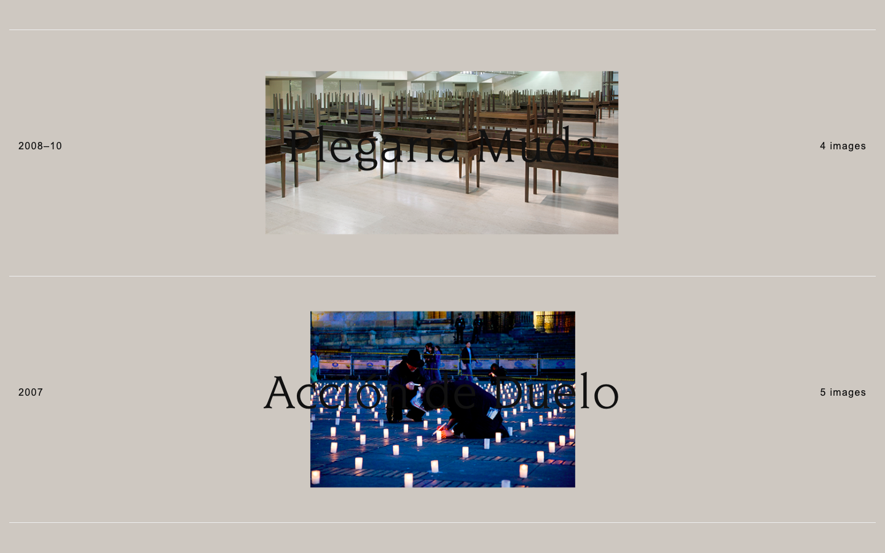
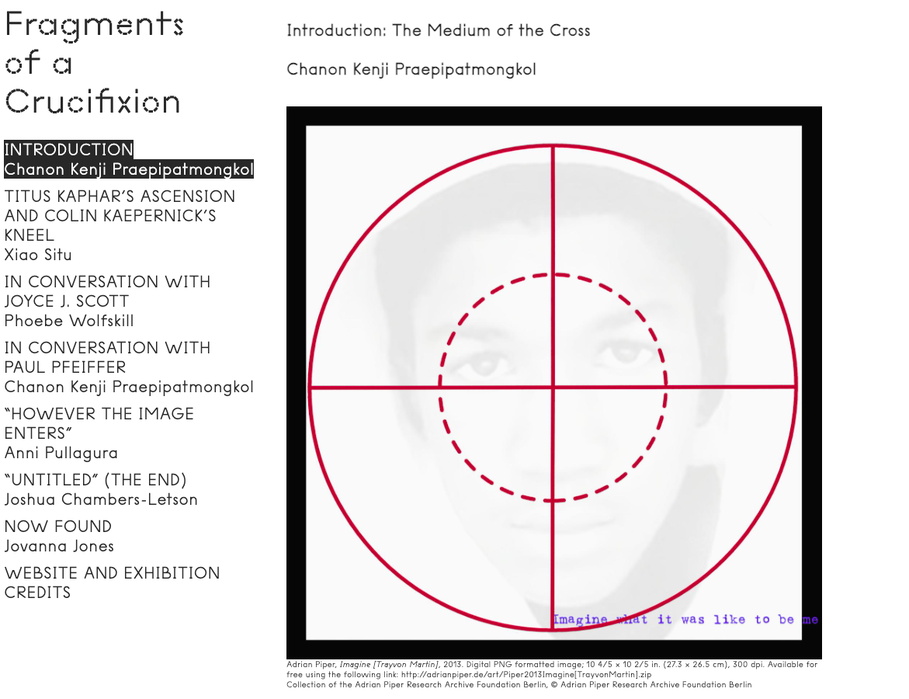
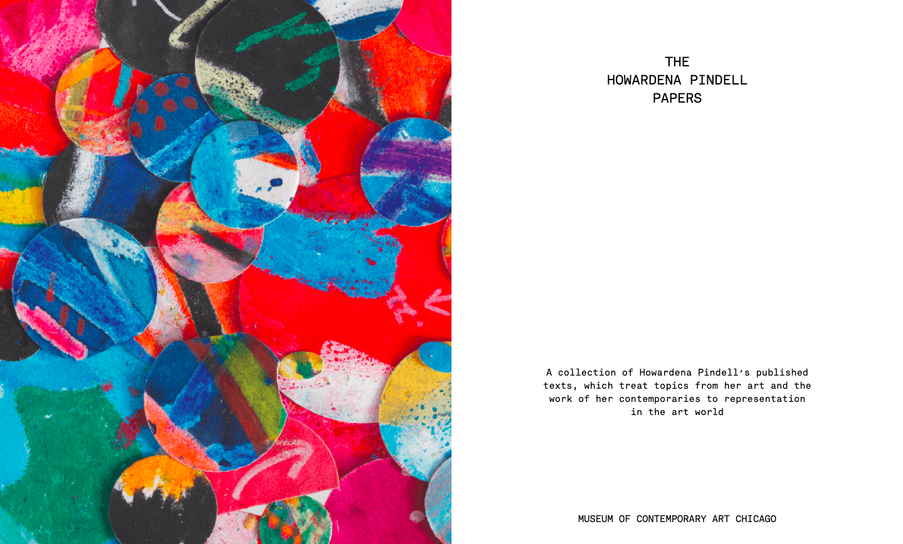
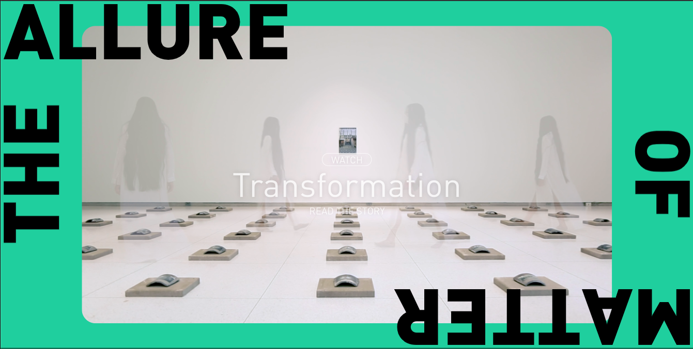
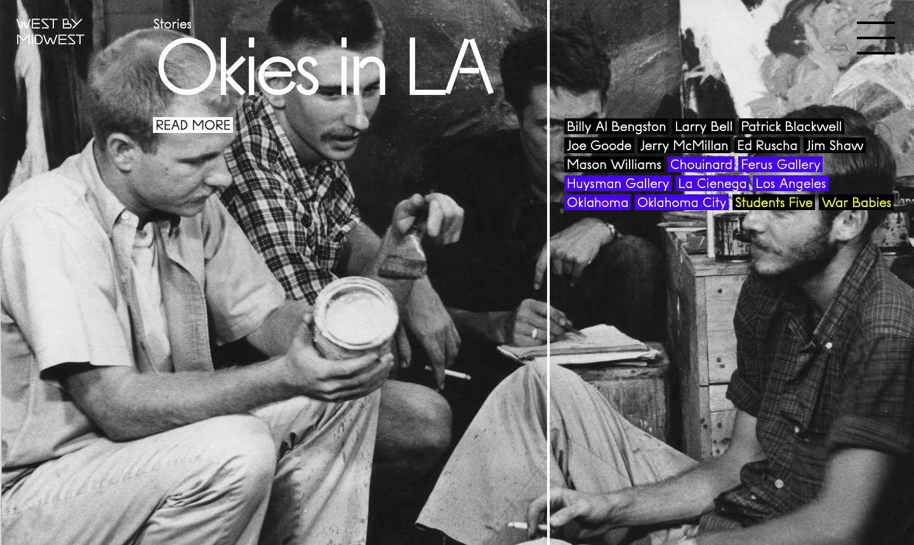
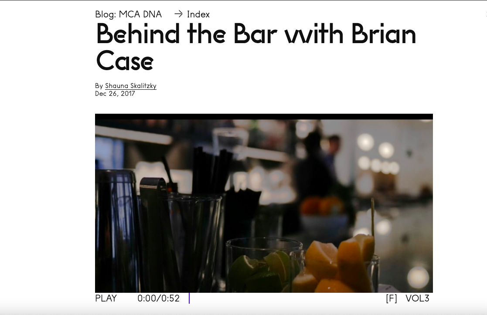
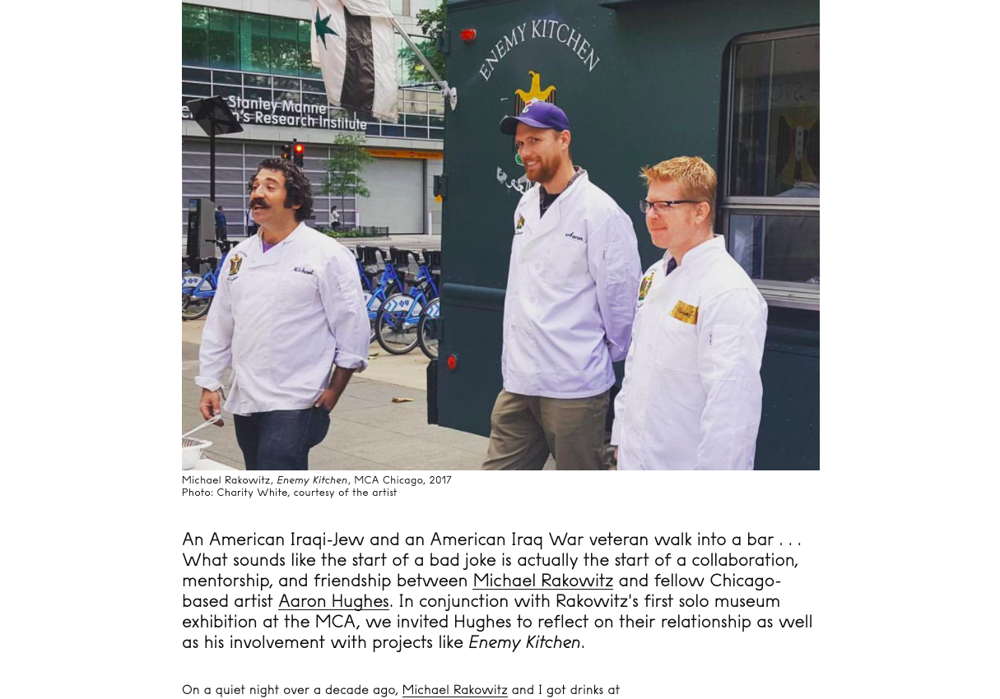
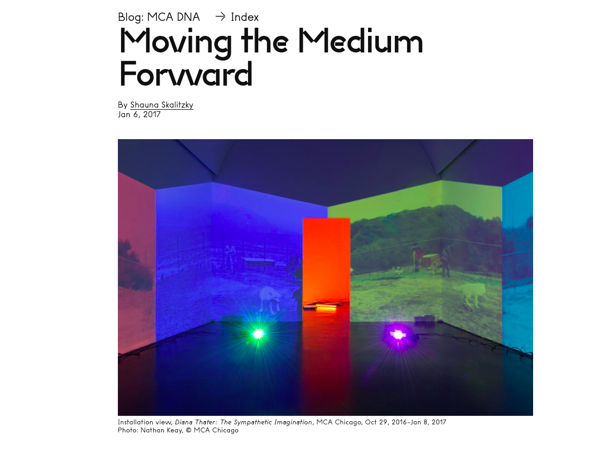
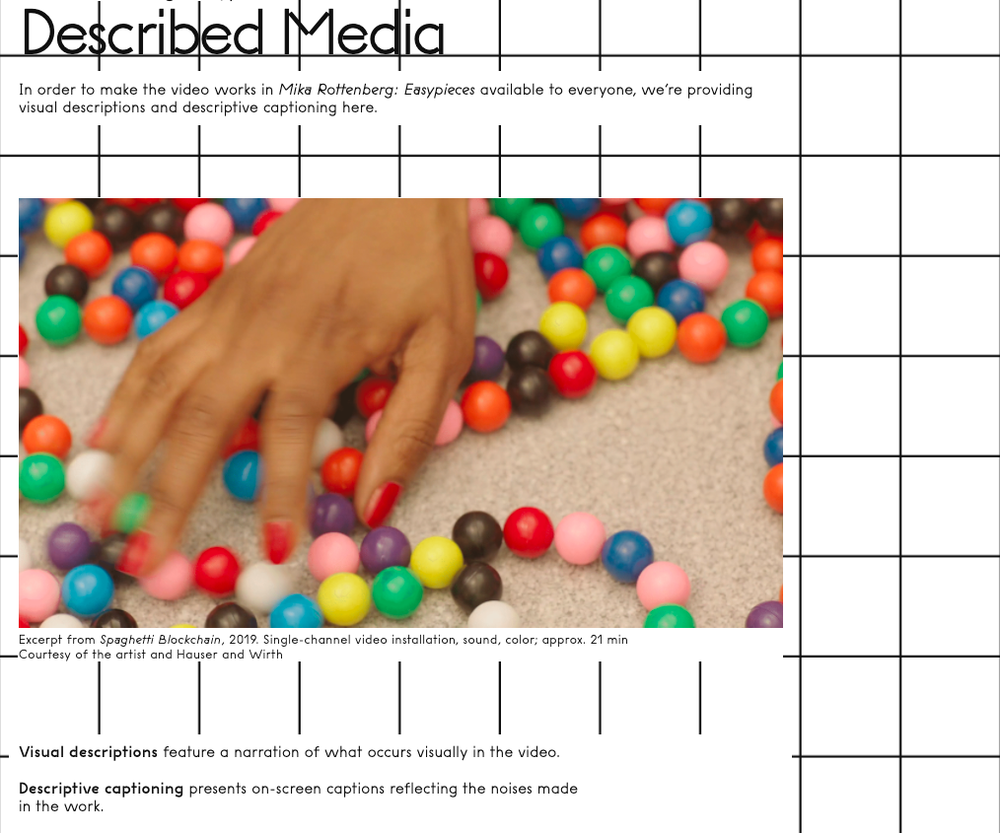

Past Projects
This is just a small sample of projects I have been involved in. More information can be found on my LinkedIn page.
-

Moving Vision: Op and Kinetic Art from the Sixties and Seventies
OKCMOA
Edited -

Doris Salcedo
MCA Chicago
Edited | Managed -

Fragments of a Crucifixion
MCA Chicago
Proofed -

Howardena Pindell: What Remains To Be Seen
MCA Chicago
Edited | Managed -

I Was Raised on the Internet
MCA Chicago
Edited | Managed -

Prime Access Consulting
Solid Pink Productions
Edited -

The Allure of Matter
Smart Museum of Art
Edited -

West by Midwest
MCA Chicago
Authored | Edited | Managed -

Behind the Bar with Brian Case
MCA DNA
Authored | Managed -

Generosity, Despite
MCA DNA
Edited | Managed -

Moving the Medium Forward
MCA DNA
Authored -

Mika Rottenberg: Easypieces
MCA Chicago
Proofed